1-4 · 外観・構造 / 3D
クレーンの種類
クレーンの代表的な7種類。外観と荷を運ぶ仕組みを比べる。機種ごとに能力や設置方法は異なる。
修正前を見る
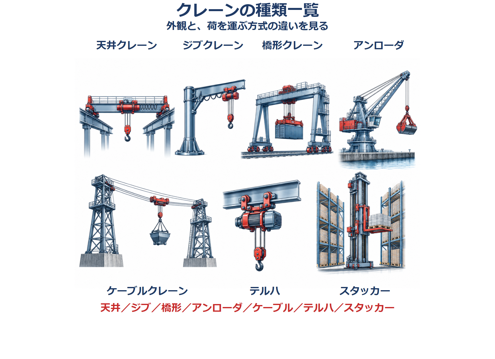
第1章4節の7図と、他の節で同じ懸念があった7図を整理。2Dと3Dを用途で分け、白背景・紺の文字・余白・簡潔な注釈を共通にしました。図を押すと拡大できます。
全章の教材・用語集194図を一覧で視覚確認し、今回の14図は個別に再作成・確認しました。全図を公式書籍と照合した技術監査ではありません。このページはスマホ幅での図の確認用Webプレビューであり、iOS実機の画面ではありません。
クレーンの代表的な7種類。外観と荷を運ぶ仕組みを比べる。機種ごとに能力や設置方法は異なる。

普通形はフックで荷をつり上げる。レードル形は主巻で容器を支え、補巻で傾ける。
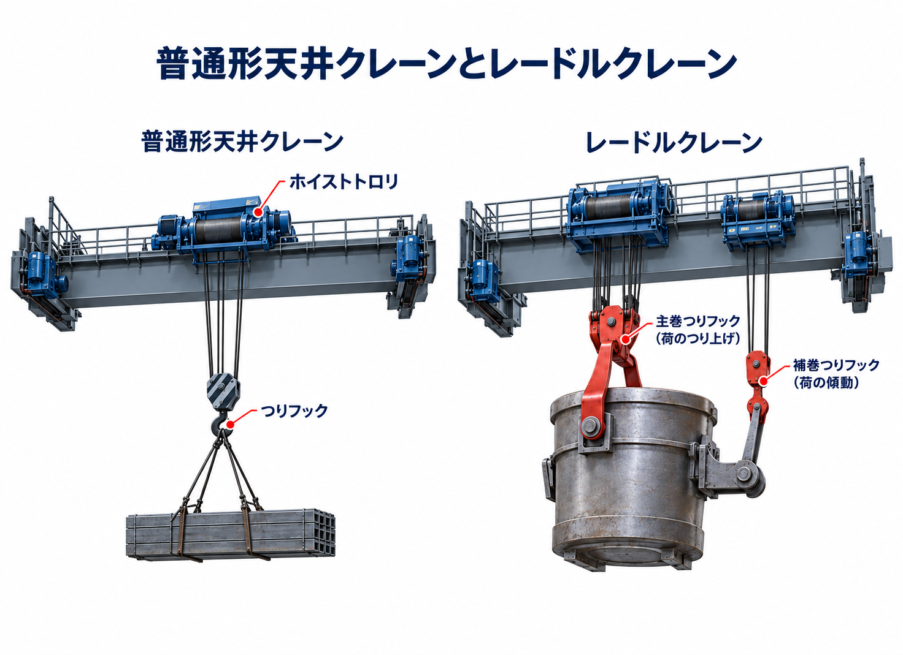
上昇方法の模式図。左はマストを継ぎ足す方式。右は建物の床を支えに、マスト全体を上へ移す方式。
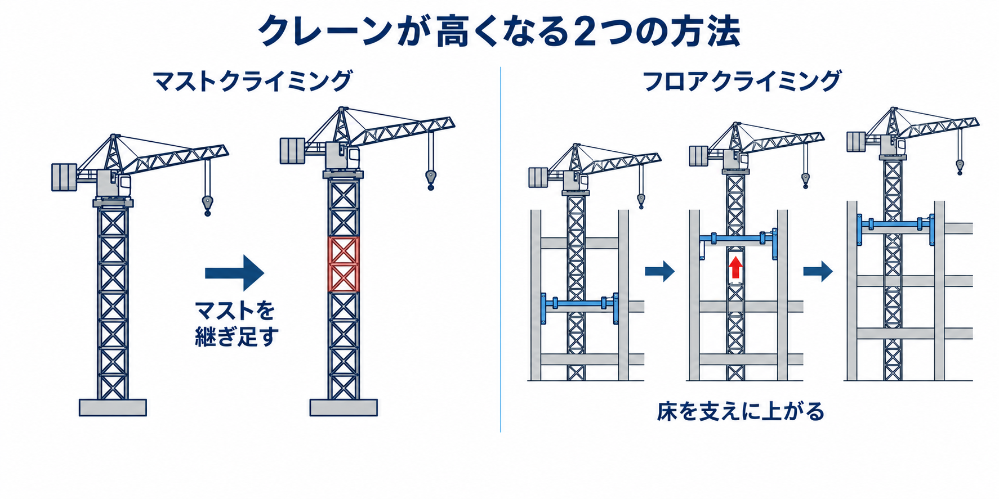
ジブクレーンの代表的な形。高脚・低床・ポスト形・つち形・壁クレーンを、支持部分とジブの形で見分ける。
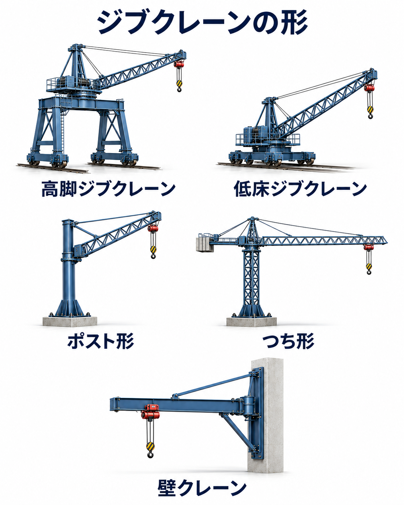
スタッカークレーンの3形式。上部で支えるか床上で支えるかを比べる。フォークを昇降させて荷を出し入れする。
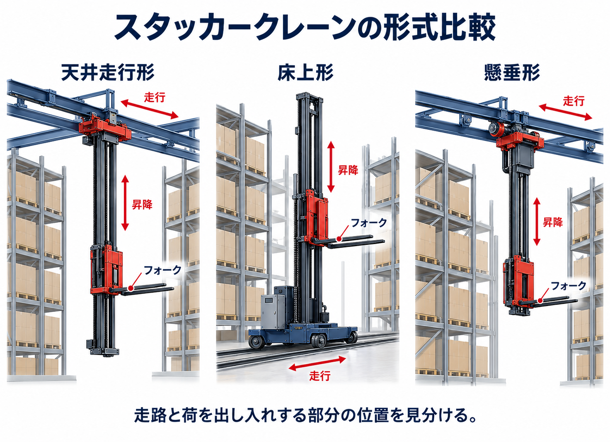
引込みクレーンの4方式。ジブの連結やロープの使い方を変え、荷の高さの変化を抑える。赤い部分に注目して比べる。
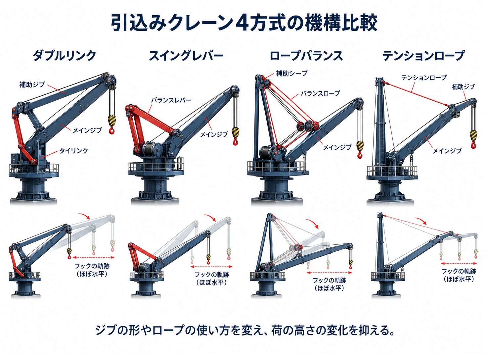
サスペンション形は桁の下フランジで車輪を支える。トップランニング形は2本の上部レールで車輪を支える。
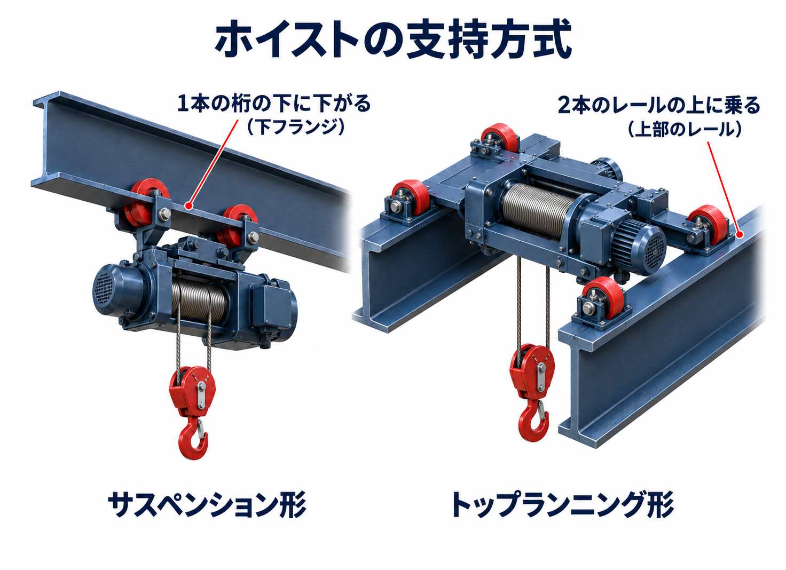
左：取付部に力が集中しないよう、ドラムに捨巻きを2巻以上残す。右：エコライザシーブが左右のロープの張力をそろえる。

油浴式は、歯車の一部を油に浸して回転させ、油をはね上げて潤滑する。密閉された装置でも、油の点検・交換が必要。
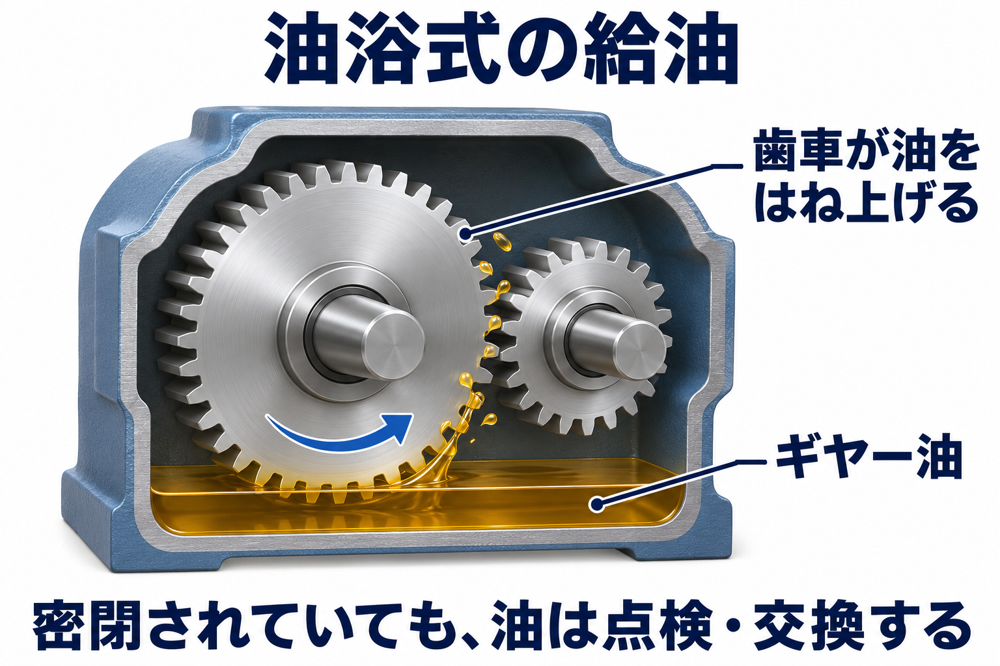
共用保護盤の配置例。主配線用遮断器・主電磁接触器などを収め、電力を分配し、回路を保護する。内部の配線は省略。
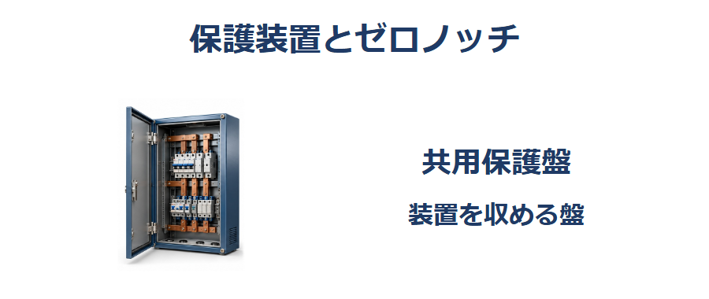
配線用遮断器の外観例。連動する操作ハンドルで回路を開閉し、過負荷や短絡では自動で遮断する。
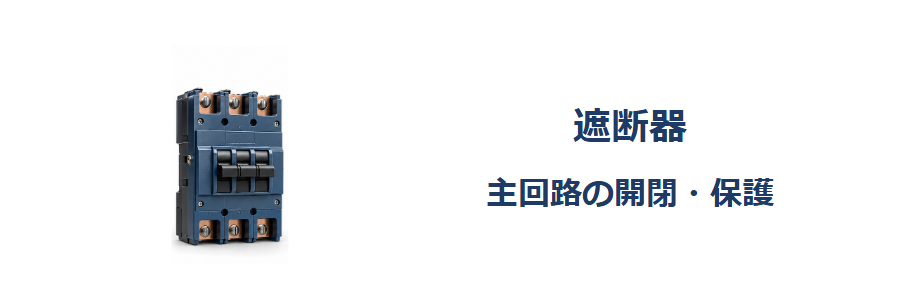
電磁接触器の内部構造の模式的な3D図。コイルの磁力で鉄片を動かし、主接点を操作する。
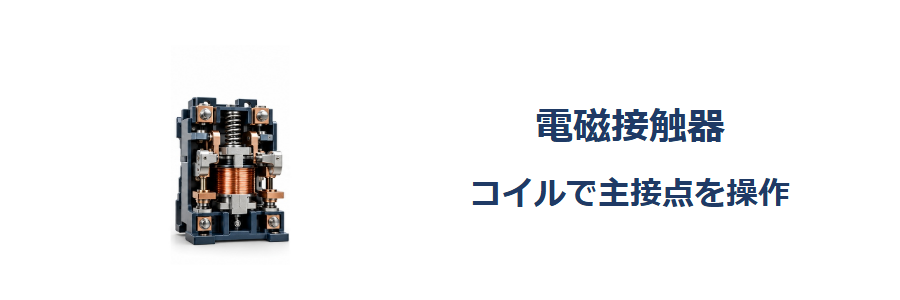
絶縁抵抗計の接続例。LINEは巻線端子、EARTHは金属フレームへ。電源遮断・無電圧確認後に測定する。100 MΩは表示例。
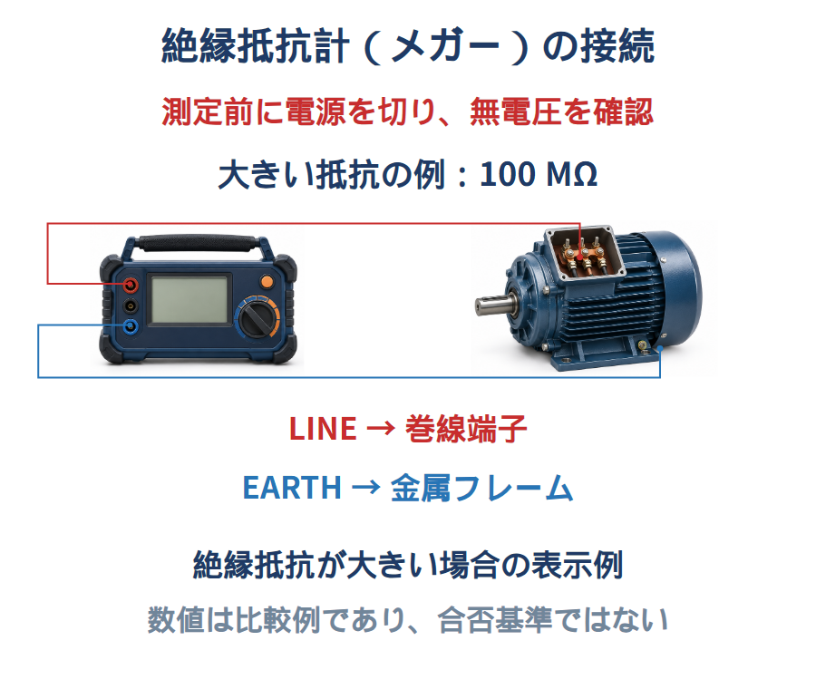
同じ測定電圧なら、絶縁抵抗が大きいほど電気は漏れにくい。100 MΩと0.1 MΩは比較例であり、良否基準ではない。測定電圧・端子名は取扱説明書で確認し、測定後は所定の方法で放電する。
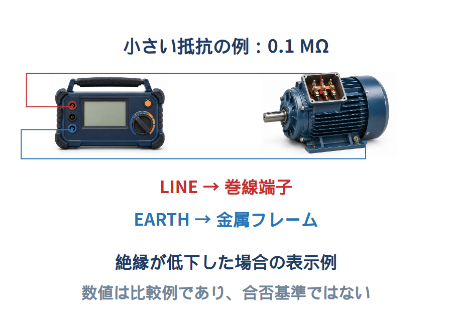